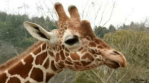
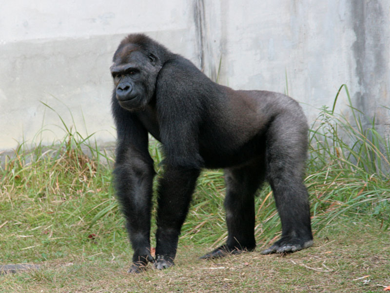

ゾウ象は、陸上最大の哺乳類である長鼻目の動物です。アフリカゾウとアジアゾウの2種がおり、それぞれ特徴が異なります。大きな体と長く伸びた鼻、太い四肢を持ち、植物を主に食べる草食動物です。群れで生活し、社会性が高く、複雑な感情を持つ知的な動物です キリン キリンは「Giraffa camelopardalis」という学名の、アフリカに生息する世界で最も背の高い哺乳類です。長い首が特徴で、高い木の葉を食べることに適応しており、脚も長く、体高は最大で$5$mに達します。また、模様は個体ごとに異なり、舌は黒っぽくて長いです |
パンダパンダは、中国の山岳地帯に生息する、特徴的な白黒の毛皮を持つクマ科の哺乳類です。主に竹を主食とし、そのために「第六の指」と呼ばれる手首の骨が発達し、竹を握って効率的に食べることができます。かつて絶滅危惧種に指定されていましたが、保護活動の成果により危急種に引き上げられました。 ゴリラ ゴリラは、アフリカ中央部に生息する大型の類人猿で、霊長目ヒト科に属します。草食中心で、果物、葉、木の皮などを食べます。オスは成熟すると背中に銀色の毛が生える「シルバーバック」と呼ばれ、群れを率いるリーダーとなります。外見に反して繊細で温厚な性格を持ち、ストレスに弱い一面があります |